Next: 4.6 Common Problems and
Up: 4. Masks
Previous: 4.4 Conversions of Selections,
Subsections
Chapter 3 described in detail the use of the GIMP's
selection tools; however, that discussion is incomplete. A full
understanding of how to effectively work with selections requires a
discussion on how to integrate masks. This section shows how masks
are complementary to the selection tools and illustrates why the
combination of selections and masks is so powerful.
4.5.1 Using Masks to Refine Selections
Masks are terrific tools for refining selections. A careful
examination of a mask can often reveal several problems.
Figure 4.36
Figure 4.36:
Image Illustrating a Selection
| 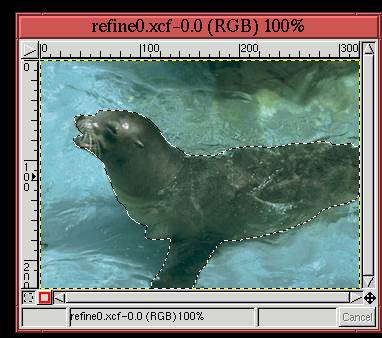 |
illustrates a selection made with the Bezier Path tool. As will
be seen in a moment, this selection exhibits the three basic types of
selection problems. To better examine these problems, the selection
is converted to a channel mask, and the selection itself is canceled.
The resulting channel mask is shown in Figure 4.37(a),
Figure 4.37:
A Mask Converted from the Selection
| 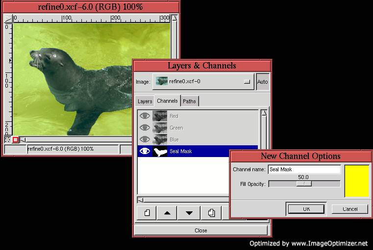 |
and Figure 4.37(b) shows the associated Channels
dialog. Because it is difficult to make out the light blue water
background through a 50% transparent, black channel mask, the color
of the mask has been changed to yellow, as shown in
Figure 4.37(c).
To see the problems associated with the selection, the Zoom tool is used to magnify the image window. This
produces the result shown in Figure 4.38(a).
Figure 4.38:
Illustrating the Three Basic Selection Problems
| 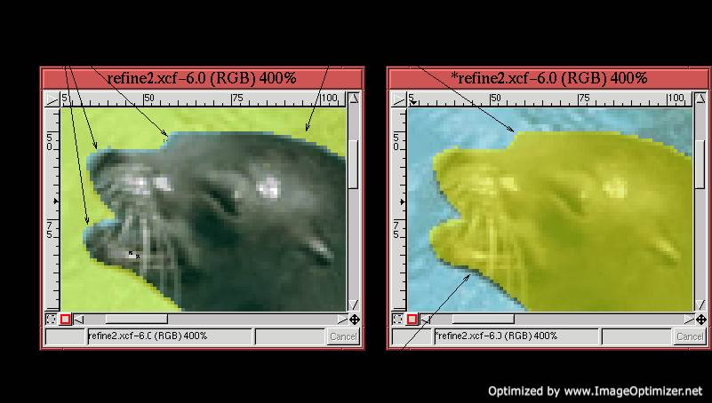 |
This figure shows that in several regions the light blue color of the
background is showing through from around the edges of the yellow
mask. This means that these pixels have been erroneously included as
part of the selection.
Figure 4.38(b) shows the same image as in
Figure 4.38(a), but with the colors of the mask
inverted. The color inversion is done by making the channel mask
active and then using the Invert function found in the Image:Image/Colors menu.
Inverting the colors inverts the regions of the mask that correspond
to selected and unselected pixels in the image. Now it can be seen
that in some places, the dark pixels from the subject are showing
through around the mask edges. This means that they are mistakenly
not included in the set of selected pixels.
Finally, in both Figures 4.38(a) and (b) a
rough-edge, aliasing effect can be seen.
Each of these three problems can be solved by refining the mask. This
can be accomplished using several different methods, but for this type
of fine work near a mask edge, the best choice is the Airbrush tool from the Toolbox. The Airbrush
can apply a very light coat of paint, so it is a great touch-up tool.
Working near the edge requires some blending of the background with
the subject to avoid aliasing. When used with a light pressure the
Airbrush is perfect for this.
Figure 4.39(a)
Figure 4.39:
Introducing the Airbrush Tool
| 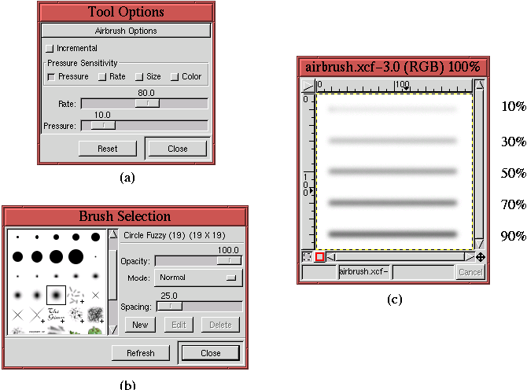 |
shows the Tool Options dialog for the
Airbrush. It is the Pressure option that interests us here.
The Pressure slider is in units of percent, and the default value of
10% is shown in Figure 4.39(a). The effect of
using 10% pressure in conjunction with the soft brush chosen in
Figure 4.39(b) produces the top line painted in
Figure 4.39(c). Each of the other lines is painted
with the Pressure value labeled to the right of the line. This figure
shows that, for low pressures, the Airbrush tool produces a very
light layer of paint, great for touching up imperfect and aliased
edges like the ones seen in Figure 4.38.
Using the Airbrush tool on the problem pixels shown in
Figure 4.38 produces the results shown in
Figure 4.40.
Figure 4.40:
Solving the Three Basic Selection Problems with the Airbrush Tool
| 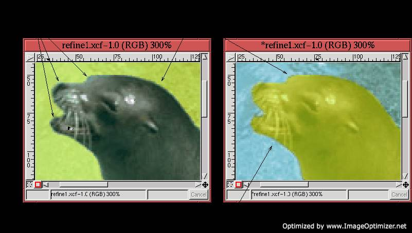 |
The technique used in applying the Airbrush tool is as follows:
- 1.
- Make the channel mask active.
- 2.
- Use the Zoom tool to magnify the image to a sufficient
resolution so that the paint can be applied to the problem edge areas
with precision.
- 3.
- Set the Active Foreground Color to black by typing d in
the image window.
- 4.
- Lightly apply black paint to the problem areas with the Airbrush
tool. The black paint is useful for removing pixels which should not
be part of the selection.
- 5.
- Invert the mask colors using Invert from the Image:Image/Colors menu, and work the new problem areas. Because of
the inversion of color, now the black paint is useful for including
pixels that should be part of the selection.
- 6.
- Evaluate the precision of the applied paint, and correct for mistakes
by making liberal use of the Undo (C-z) and Redo
(C-r) functions.
4.5.2 The Quick Mask
The previous section showed you how a channel mask could be used
to refine a selection. This is so useful that the GIMP has a special
pair of function buttons on the image window allowing a selection to
be quickly converted to a channel mask and vice versa. These are
called the Quick Mask buttons.
Figure 4.41(a)
Figure 4.41:
Using the Quick Mask
| 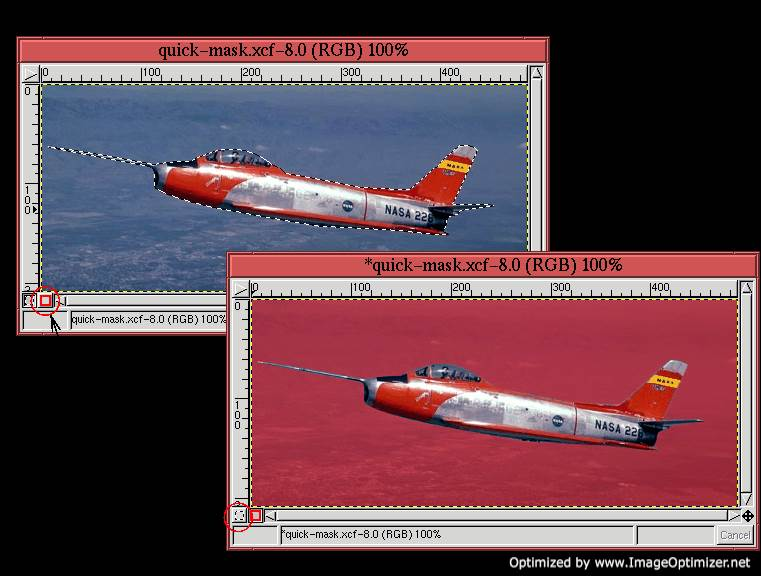 |
illustrates an image with a selection. It also shows a button circled
at the lower-left side of the image window containing a red square
icon. This is the Quick Mask button. Clicking on it
converts the selection to a mask, as shown in
Figure 4.41(b). The button shown circled in
Figure 4.41(b) contains an icon showing a square
drawn in a dashed line and resembling the Marching Ants. Clicking on
this button reverts the quick mask to a selection. Thus, the Quick Mask buttons can be used to quickly convert a selection to a
mask that can then be edited, as described in
Section 4.5.1, before being converted back to a selection.
Figure 4.42
Figure 4.42:
Quick Mask Options
| 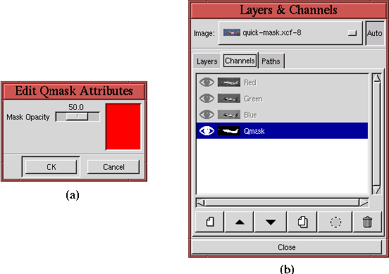 |
shows two features of the Quick Mask buttons. Double-clicking
either of the buttons brings up the Edit Qmask
Attributes dialog. This dialog,
shown in Figure 4.42(a), permits the default
opacity and color of the mask to be modified. The second feature of
the quick mask is shown in Figure 4.42(b). When
the quick mask is created, it also appears in the Channels dialog with
the label Qmask in the Channel Title area. This channel exists only
as long as the quick mask and disappears as soon as the mask is
reverted to a selection.
4.5.3 Finding the Natural Mask
Performing a selection requires separating the subject, the part of
the image that interests us, from the background. Often the subject
has colorspace features that differentiate it from the background, and
the goal of this section is to explain how to exploit this fact.
Since the techniques described in this section depend on using an
image's natural color features to make the selection, I call this finding the natural mask. The methods are based on using two primary
tools: Threshold, found in the Image:Image/Colors menu,
and Decompose, found in Image:Image/Mode. The natural
mask approach often allows the subject to be extracted in a single,
bold operation.
4.5.3.1 Working with the Threshold Tool
The Threshold tool allows you to specify a range of values in an
image. All the pixels that are in the range of the selected values
are mapped to white, and the rest are mapped to black. Threshold is a powerful tool for automatically creating masks. This
is illustrated in the following example.
Figure 4.43
Figure 4.43:
Pasting the Image into Its Own Channel Mask
| 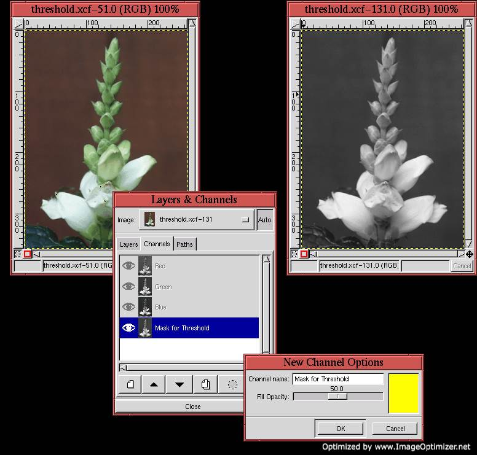 |
illustrates the first step of using Threshold to create a
natural mask. In the example, we want to make a selection of the
partially blooming flower in Figure 4.43(a). We
begin by copying the image in Figure 4.43(a) into
a channel mask. This is done by creating a new channel mask in the
Channels dialog, and then copying and pasting the image layer to the
mask using C-c and C-v (see
Section 2.4).
Figure 4.43(b) shows the resulting Channels
dialog, and Figure 4.43(c) shows that yellow is
chosen as the mask color. This color was chosen to contrast against
the dark background of Figure 4.43(a). Since a
channel mask is only 8 bits deep, pasting the color image into the
channel mask immediately converts it to a grayscale. This can be seen
in Figure 4.43(d), which was obtained by toggling
on the channel mask's Eye icon and toggling off the image layer's Eye
icon.
The Threshold dialog works by clicking and dragging out a part
of the range of values in the histogram. The range of values in the
histogram is in [0,255], and, as can be seen in
Figure 4.44(b),
Figure 4.44:
Applying Threshold to the Channel Mask
| 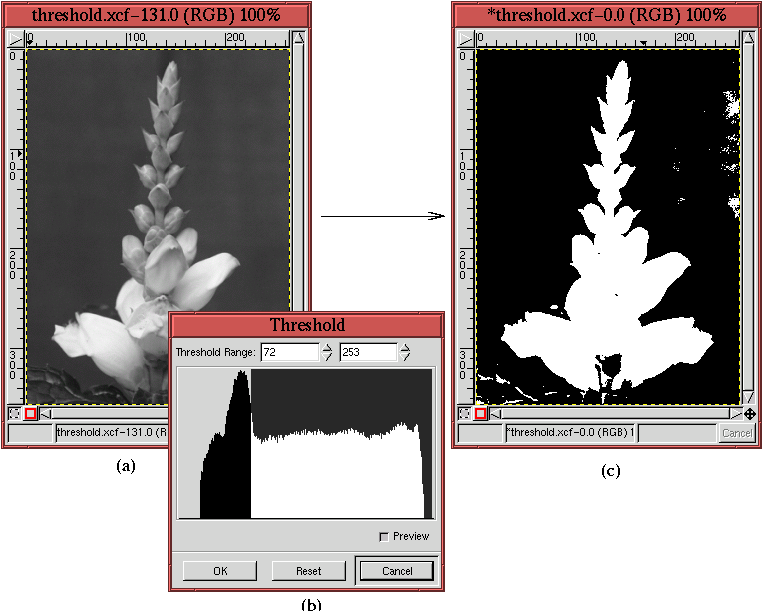 |
the range that has been selected is from 72 to 253. Sweeping out
values in the Threshold dialog's histogram immediately maps to
white the pixels in the active layer (here the channel mask) having
these values. The pixels having values outside the swept range are
mapped to black. Thus, the channel mask that was a continuously
varying grayscale image is converted to a binary black-and-white one.
Figure 4.44(a) shows the channel mask before the
application of Threshold, and
Figure 4.44(c) shows the channel mask after the
application of Threshold.
Toggling the image layer's Eye icon back on allows the channel mask to
be seen over the image, as illustrated in
Figure 4.45.
Figure 4.45:
The Resulting Mask Defects as Seen in the Image Window
| 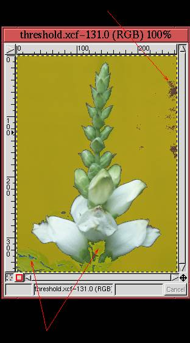 |
The parts of the image layer corresponding to the white parts of the
channel mask can be seen clearly in the image window. The parts of
the image corresponding to black parts of the channel mask are masked
by a partially transparent yellow film.
As shown in Figure 4.45, the result of using Threshold produces an almost perfect mask for the flower. However,
several defect regions remain. There are certain parts of the image
that should be masked but aren't, and there are parts that are masked
but that shouldn't be. These regions are easily removed using the
Lasso and the Paintbrush tool.
Figure 4.46(a)
Figure 4.46:
Using the Lasso Tool to Remove Defect Regions
| 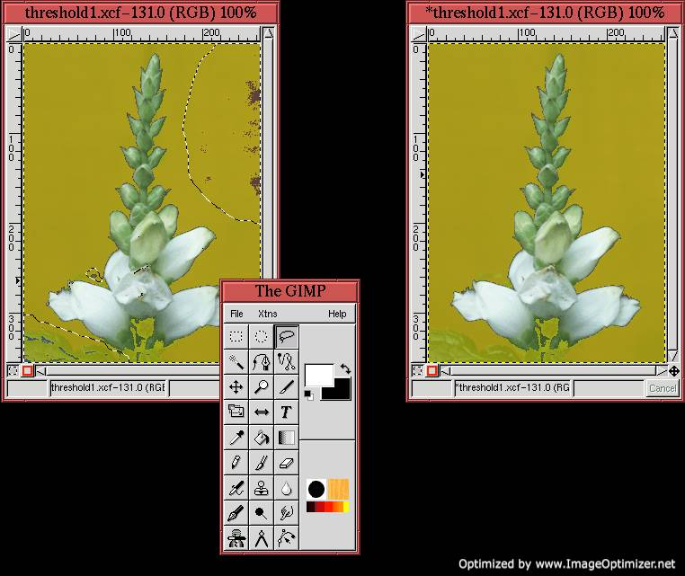 |
shows how the Lasso has been used to select parts of the image that should be
masked but aren't. Because there are several offending regions, their
selections have been combined using the methods described in
Section 3.2. The parts of the channel
mask that are in the selected regions are repaired (that is, converted
to black) in three steps. The channel mask is made active by clicking
on its thumbnail in the Channels dialog, the Active Background
Color is set to black, as shown in
Figure 4.46(b), and the selections are cut by
typing C-x in the image window. The result is shown in
Figure 4.46(c).
Figure 4.47 shows how the stalk of the flower,
which was not included in the mask, is restored using the Paintbrush tool.
Figure 4.47(a)
Figure 4.47:
Using the Paintbrush Tool to Fill in Missing Regions
| 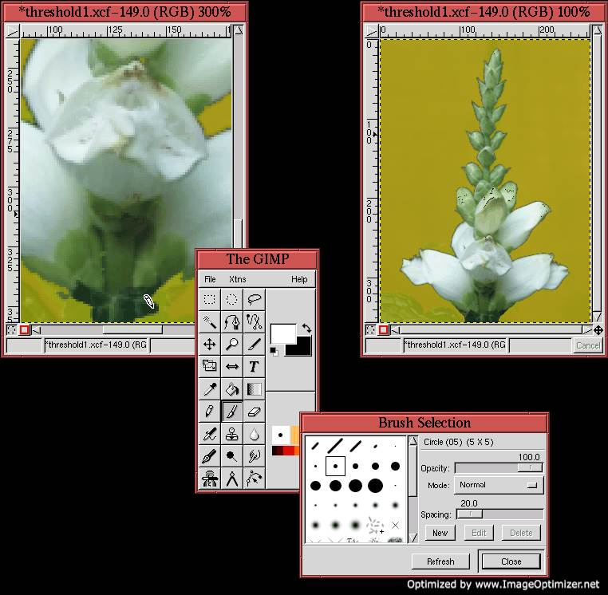 |
shows the stalk of the flower zoomed by 300%, and
Figure 4.47(b) and (c) show that white is chosen
as the Active Foreground Color and that a small hard brush has been
chosen from the Brush Selection dialog. The Paintbrush
cursor can be seen applying white paint to the mask over the region of
the flower stalk in Figure 4.47(a). The
semi-transparency of the mask facilitates the painting process.
Figure 4.47(d) shows the result of having fully
restored the flower stalk.
For the final step in this example, Figure 4.48(a)
Figure 4.48:
Converting the Mask to a Selection
| 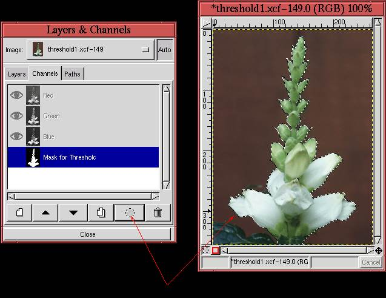 |
shows how the Channel to Selection function is applied by
clicking on its icon in the Channel dialog's button bar. Turning off
the visibility of the channel mask, the resulting selection is seen in
Figure 4.48(b).
This example shows how using Threshold can produce a selection
much more quickly than would have been possible with the Bezier
Path tool. Making a Bezier path would have required placing and
refining a large number of control points. In contrast, the procedure
employed with the Threshold tool required some experimentation
with values in the tool's dialog, followed by some rough selections
with the Lasso and some painting with the Paintbrush.
A key element to making the Threshold tool work efficiently is
finding a reasonable range of values in the tool dialog's histogram.
The example used in this section shows that it is not necessary to
find a perfect mask. Rather, the goal is to find a mask that
separates the subject from the background enough so that tools such as
the Lasso and the Paintbrush can be used to easily clean
up the defects.
The range of values used to create the mask in this example is shown
in Figure 4.44(b). It is important to understand
that this result was obtained by using a trial-and-error, experimental
approach. Several contiguous regions of the histogram were swept out
by the mouse, and, each time, the parts of the image that mapped to
white and black were observed. A tip for finding useful regions is to
examine the ranges of values supporting the main bumps in the
histogram. These are usually associated with major image features,
and it is often the case that one of these bumps is the solution to
our search. When a reasonable range has been discovered, the data
entry boxes can be used to refine the end points of the range.
Although the Threshold tool is not a panacea and isn't
guaranteed to work, it is often successful. It is worth trying to
apply the Threshold tool before launching into a long selection
process with the Bezier Path tool. Some good examples of using
Threshold to make selection masks are illustrated in
Sections 7.3 and
7.4.
4.5.3.2 The Threshold Tool Versus the Magic Wand
The Magic Wand, presented in Section 3.1.1, is
very similar in principle to Threshold but not nearly as
effective. As already described, the Magic Wand works by
choosing a seed pixel in the image and interactively setting a
threshold that controls how many pixels around the seed are included
in the selection. Thus, if the value of the pixel at the seed is S,
and the value of the threshold is T, then the range of pixel values
that are included in the selection is [S-T,S+T].
Now suppose that the range of pixel values that separates the subject
from the background is [R1,R2]. To make the Magic Wand work
on this image, the threshold must have the value
T=(R2-R1)/2 and
the seed must have the value
S=(R1+R2)/2. The problem, then, is
finding a pixel in the subject having the correct seed value that,
when experimenting with threshold values, will produce an acceptable
result. This is impractical for several reasons, the main difficulty
being that there is no way to use the visual feedback from several
tries of the Magic Wand to discover a more refined solution.
On the other hand, Threshold requires only that the end points
of the range be specified, so it's much better adapted to
experimentation. It is easy to try several contiguous value-regions,
and the visual feedback from this is very useful for improving the
search. In addition, the histogram in the Threshold dialog
provides important clues as to which regions may be most useful.
Finally, the algorithm used by the Magic Wand is slow, because
for each change in the threshold value, it must recursively grow the
selected region around the seed. In comparison, the algorithm for
Threshold is very fast, because it must only compare each pixel in
the image with a threshold.
4.5.3.3 Threshold and Decompose
In the previous sections, Threshold was applied directly to the
image. However, this tool can often be more effective when applied to
an image color component. The function Decompose, found in the
Image:Image/Mode menu, can be used to separate an image into
its RGB and HSV components. When the decomposition is RGB, Decompose creates three grayscale images containing the red, green,
and blue channels of the image. For HSV, three grayscales are also
created, but now they represent the hue, saturation, and value
components of the image. (See Chapter 5 for an
in-depth discussion of the relationship between an image and its RGB
and HSV color components.)
Figure 4.49(a)
Figure 4.49:
A Flower Image and the Decompose dialog
| 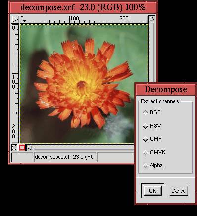 |
illustrates an image of a flower, and
Figure 4.49(b) shows the Decompose dialog.
Either an RGB or HSV decomposition of the image can be performed by
clicking on the appropriate radio button. The CMY decomposition is not useful, because it produces results
that are identical to RGB when used with the Threshold tool.
CMYK may produce interesting results, but only
RGB and HSV are discussed here.
Figure 4.50(a), (b), and (c)
Figure 4.50:
The RGB and HSV Decompositions of the Flower
| 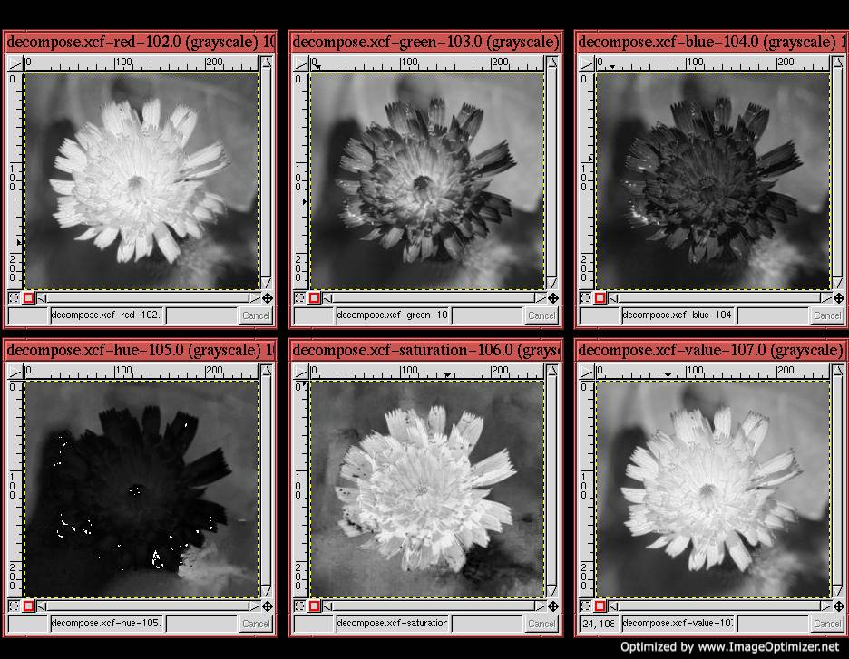 |
show the red, green, and blue components of the flower shown in
Figure 4.49(a).
Figure 4.50(d), (e), and (f) show the hue,
saturation, and value components. Note that for each of the
components, the relationship between the flower and its background is
different. For example, the flower in both the red component and the
saturation component seems to be better separated from the background
than for the other components. Because the flower is a brightly
saturated orange-red, this should not be a surprise. However, the
point of using the Decompose tool is that it gives the Threshold tool an advantage that can be exploited when trying to
extract a natural mask. Examples of using this technique can be found
in Sections 7.3 and 7.4.
Next: 4.6 Common Problems and
Up: 4. Masks
Previous: 4.4 Conversions of Selections,
©2000 Gimp-Savvy.com